大任務為什麼會拖垮 agent，以及一份能被 agent 讀到的記憶體
第一章到第五章反覆強調的 smart zone／dumb zone 分野，到了要出貨大功能的時候變成一個具體的工程問題：小功能或 bug fix 可以「一個 session 從頭做到尾」，但一個橫跨資料庫、服務層、前端好幾層的重構，光靠一次對話規劃就注定要滑進 dumb zone。Matt 的解法沒有花招——這就是軟體工程師幾十年來的老辦法：把大任務拆成一塊塊都塞得進 smart zone 的小任務，差別只在於，現在拆解的對象是 agent，而不是團隊裡的另一個人。
要做到跨 session 的拆解，前提是要有一個東西活得比單一 context window 久。Matt 給的答案是兩份文件：一份描述「要去哪裡」（spec），一份描述「這一段路怎麼走」（ticket），一個 spec 底下可以掛好幾張 ticket，他自己做過的最大案子，一份 spec 底下掛了 30 張 ticket，結果依然是可控的。但這兩份文件要放在哪裡才能同時被人和 agent 讀到、也能在切換電腦或 worktree 時不遺失？答案是拉到 repo 之外，放進 issue tracker。
issue tracker 對做過開發的人並不陌生——它本來就是拿來跨團隊、跨成員協調工作的工具，現在多了一個新角色：agent 可以直接讀你團隊在用的同一個 tracker。課程選 GitHub Issues 做示範，理由很直白：免費、多數人已經有帳號、透過 GitHub CLI 就能讓 agent 存取；但概念可以套用在 Jira、Linear、Todoist 等任何 tracker 上。設定方式是先用 `npx ai hero cli fork` 建一個私有 fork（不會跟其他學員的 issue 混在一起），再跑一次「set up Matt's skills」skill，讓它把 issue tracker 的選擇寫進 `agents.md` 的導航指標，之後任何 skill 要記錄或查找工作，都會照著這條指標走到 GitHub Issues 上。這一步做的事其實很小——加一行導航指標——但意義是把「工作記在哪裡」這件事從人的記憶交給了一份 agent 也能讀的文件，Matt 提到自己主要工作的 repo 上有 1,200 個 issue 已關閉、只剩 28 個開著，這正是這套機制長期運作後的樣子：issue tracker 不是拿來一次性列清單，是拿來撐住整個專案的生命週期。

目的地文件與路線文件：spec 定終點，ticket 分路線
有了 issue tracker 當容器，接下來要決定容器裡放什麼。spec 是「目的地文件」，它的產生方式刻意設計得很省力：不是叫你重新回答一堆問題，而是直接把當下對話裡已經發生過的討論（也就是前一章的 grilling 環節）壓縮成一份結構化文件，裡面有問題陳述、解法、user story，資訊密度夠高，足以讓接手實作的 agent 拿到就能開工。整個流程大致長這樣：先做一次 grilling 對話，再把對話變成 spec，spec 再拆成 ticket，每張 ticket 各自實作完之後回頭跟 spec 對照審查。
拆 ticket 是這一節真正的技術含量所在，因為拆得好不好，決定了每一段實作出來的東西到底能不能被驗證。Matt 特別提醒一個很容易踩的陷阱：agent 拆解跨層任務時，天生傾向按「水平切片」（horizontal slice）分階段——第一階段先做資料庫、第二階段接服務層、第三階段接前端，看起來井然有序，實際上是個陷阱。用水平切片，你要等到最後一個階段才知道第一階段的設計到底站不站得住腳，等發現問題已經太晚。正確做法是「垂直切片」（vertical slice）：每一個 phase 都從一開始就橫跨所有層——資料庫、API、前端一起動，先做出一個最小但完整可行的版本，再往上疊。這個概念不是 Matt 發明的，《The Pragmatic Programmer》裡的 tracer bullet 概念早就講過同一件事，用這個詞當提示語還有個附加好處：agent 本身就懂這個詞在軟體工程裡的含義，等於直接命中它訓練資料裡對的那塊區域。
執行這套拆解邏輯的是「to tickets」這個 skill，操作上延續同一個對話（不清空 context），呼叫它之前要先過一輪決策：context 還裝得下嗎？裡面的資訊還相關嗎？需不需要交接給別人？能不能無人值守完成？Matt 自己實測時 context 才用到 64K token，選擇直接繼續而不是先 compact。skill 跑完之後會給出一份建議拆法，這時候人要做的事很具體：檢查它是水平切還是垂直切、檢查每張 ticket 有沒有貪心到裝不進一個 smart zone——因為每個 session 就只有一次 smart zone 額度可以用。
把 ticket 交出去執行：implement、TDD、code review 三件套
spec 和 ticket 都就緒之後，實際執行靠的是 implement skill，但它本身很單薄，真正的工作分派給另外兩個 skill：TDD 和 code review。implement 的指令很直白——依 spec 或 ticket 描述的內容實作、盡量用 TDD、定期跑 type check 和單一測試檔、全部做完再跑一次完整測試套件，完成後叫 code review 審查、通過再 commit。
TDD skill 的價值在於先寫測試再寫實作這件事，本質上是在給 agent 製造更多回饋訊號——Matt 的觀察是 agent 在有回饋的情況下表現最好，而先把單元測試寫出來，就是提前把「這段程式碼對不對」這個問題變成可以立即檢驗的東西。skill 裡也內建了什麼是好測試、什麼是壞測試（例如同義反覆的測試：斷言用跟程式碼一樣的邏輯重算一次期望值，等於沒測）、mock 的用法、只在「已約定好的縫隙」（pre-agreed seams）上測試等具體判準，但這些細節不需要每次都自己記，skill 已經內化了。
code review skill 則是用兩個獨立的子 agent 分別對照兩套標準：一個檢查是否符合團隊自訂的程式碼規範，另一個檢查是否忠實實現了原始 spec。這一輪自動審查常常能自己修掉比較嚴重的問題，人要做的是「審查那份審查」——確認 agent 挑出的問題和做的修正是合理的。要在每張 ticket 完成後就審一次，還是等所有 ticket 都做完再一次審？兩種做法都有人用，course 裡示範的是逐票審查。每完成一個階段，該不該清空 context、要不要 compact，也是一個持續要做的判斷：Matt 的原則是——只要 spec 和 ticket 已經把決策都記錄下來，對話歷史本身就是可丟棄的冗長版本，清空通常比 compact 更乾淨，因為下一個 session 能拿到最大的 smart zone 額度，除非你判斷下一階段不需要重新探索、compact 能省下那段探索時間。做完一張 ticket 記得把對應的 issue 關掉，這是很基本的衛生習慣，也會連帶解開下一張被它擋住的 ticket。
spec 用完即丟：次要來源不該取代主要來源
spec 完工進了程式碼之後，要不要留著？很多人的直覺是留——它讀起來比程式碼易懂，人和 agent 都看得懂，感覺留著至少能當文件或歷史紀錄。Matt 的答案反直覺：功能一旦進了程式碼，就該把對應的 spec 關掉。
理由回到這門課反覆出現的一組概念：主要來源（primary source）與次要來源（secondary source）。spec 是程式碼運作方式的一份濃縮投影，投影就一定會失真，而且程式碼庫可以在你沒空更新 spec 的情況下悄悄往前跑，spec 與程式碼之間的落差只會越拉越大——這正是 spec-driven development 這一派主張「把 spec 存進 repo 當成 source of truth」讓 Matt 感到不安的地方：agent 探索 repo 時，如果同時看到一份過時但讀起來乾淨的 spec 和一份龐雜但真實的程式碼，它更可能相信那份易讀的次要來源，而不是去啃更難懂但誠實的主要來源——程式碼不會對自己說謊，除非你的 repo 裡堆著早就沒人呼叫的死程式碼或遺留原型。
所以他的建議是把 spec 完工即關（不是刪除，是關閉／歸檔），issue tracker 的關閉機制正好適合這件事：關掉的 issue 會被移出主視圖、標記為已歸檔，但 agent 需要回頭查「這段程式碼當初為什麼這樣設計」時，spec 仍然找得到。留在 tracker 裡還有另一層好處：團隊成員都看得到、可留言、日後找得到，不像存在本機的 markdown 檔只有你自己看得見；而且 ticket 存在 repo 之外，換電腦、換 worktree 都不會跟本地狀態打架。spec 是定義一段工作的暫時性文件，不是程式碼怎麼運作的最終真相，這是 Matt 願意公開跟持相反意見的人在 Discord 辯論的立場。
計畫會過時：改道，以及 Goal 指令為什麼還不夠
再好的拆解，也擋不住中途發現方向錯了。Matt 給的處理方式很簡單：你手上的 ticket 是可拋棄的，spec 才是需要保留、可以編輯的那份文件。假設一份 spec 拆成四張 ticket，做完前兩張才發現方向不對，直接刪掉還沒做的兩張 ticket，回到 spec 重新做一輪 grilling，把它改到你滿意為止，再重新生成一套新的 ticket（範圍可能因此變大一點，但通常不用扔掉已完成的工作，除非真的錯得太離譜）。整個流程是：發現終點需要換 → 刪掉未實作的 ticket、留住 spec → 對 spec 重新 grilling → 對新的 spec 重新拆 ticket → 從現在的進度繼續實作。這正是兩份文件分開設計的意義所在——如果 spec 和 ticket 揉在同一份文件裡，改道這件事就會變得很混亂。
同一個邏輯延伸出這一章另一個常被問到的問題：既然很多 coding harness 都有 Goal 指令（讓 agent 在單一 context window 裡朝一個目標持續運作到完成），為什麼不乾脆拿 spec 當 goal，讓 agent 自己跑完全程？理論上聽起來完美——spec 本來就是一份定義清楚的目的地。但 Matt 觀察到目前所有 Goal 指令的實作都沒有真正利用 smart zone：全部工作塞在一個 context window 裡，靠 auto-compacting 硬撐，結果永遠是同一個畫面——開頭一小段 smart zone，後面一大片 dumb zone。只要 auto-compaction 還沒好到能讓 dumb zone 不成問題，spec + ticket 這條路線就還是比 spec + goal 更可靠：ticket 拆解讓大部分工作留在 smart zone 裡完成、通常更省成本，而且從 spec 生成 ticket 這一步本身很快，Matt 自己有些工作流甚至讓 agent 無人值守（AFK）產生 ticket、連審都不審。如果哪天 auto-compaction 真的解決了 dumb zone 問題，他也承認 Goal 指令會是個很吸引人的設定——那時候你依然要把 spec 想清楚，只是把 context 管理和 ticket 管理都交給 agent 自己打理，最後再做一次完整的 code review 檢查是否符合 spec。但眼下的推薦依然是 ticket。
把品味寫進程式碼規範，讓 review 幫你把關
code review skill 裡有一句話容易被忽略：完成實作後，要用 code review 審查工作。Matt 把出貨前的把關拆成三層：第一層是自動化檢查（lint、type check、單元測試），這一層是確定性的，agent 每次跑都拿到一樣的通過或失敗結果，不花任何 token，理想情況下能自動檢查的越多越好；第二層是品質審查——過去這是人工 code review 的工作，AI 出現前，人得盯著 PR 判斷「這段測試好像沒測到重點」「你有沒有考慮過另一種寫法」，這種質性判斷正是自動化檢查覆蓋不到的地方，也是人人最不喜歡的開發環節之一。agent 現在能先做一輪自動審查，但這不是取代人工審查，只是讓人工審查變輕鬆——agent 已經先走過一遍。第三層依然是人的把關，尤其是多數類型的工作，人的 sanity check 還是省不掉。
真正值得留意的是，code review 這個環節可以拿來塞進你自己的品味——透過一份 `coding standards.md`。這門課前面章節提過把規則塞進 CLAUDE.md 的痛點，而 code review 是個相對特殊的例外：implement 階段的 agent 要探索程式碼、寫檔案、debug，認知負擔已經很滿；而 code review 階段的 agent 探索工作已經做完，直接被指到正確的檔案，不太需要大改動，測試也已經跑過，認知餘裕比 implement 大得多，所以把規範塞在 review 這一層，比硬要 implement 一次做對更合理。做法是每次注意到 agent 做了什麼你不喜歡的事，不要當場罵它，而是把這件事寫進 coding standards.md，下一次 review 就會抓到——例如 Matt 自己在 course video manager repo 裡寫的規則：「context menu 項目一律要有前導圖示」「app routes 底下的所有檔案都會被公開暴露，所以路由目錄不能放測試檔或工具檔」，這些規則沒有一條是憑空想的，全部來自實際踩過的坑。就算你完全不寫 coding standards.md，review 依然內建一套判準——來自 Martin Fowler《Refactoring》書裡的經典 code smell，像 feature envy（方法伸手拿別的物件的資料比拿自己的還多）、shotgun surgery、divergent change，這些都是軟體工程裡有共識的術語，agent 訓練資料裡本來就懂，所以就算你什麼都不填，review 也不是空手上陣。
問 Matt，以及五步流程的收束
課程尾聲加了一個 ask Matt skill，本質是把 Matt 過去被反覆問到的問題整理成一個可查詢的入口——例如「spec 全部 ticket 都關閉之後，遇到 bug 該怎麼修？」它給出的建議是清空 context、呼叫 diagnosing bugs skill（這是課程裡沒教過、但確實存在於 Matt 真實 skill set 裡的一個技能，提醒學員這門課只涵蓋了主線流程，還有其他技能沒展開）。skill 裡有個「phase boundary checklist」，專門處理「不確定該清空、交接、丟給子 agent 還是 compact」這種猶豫時刻。但 Matt 也誠實承認它不完美——同一個情境，他自己反而覺得該 compact，而不是像 skill 建議的直接跳去診斷 bug，而且如果只是簡單的 bug，可能根本不需要動用 diagnosing bugs 這麼重的技能。任何 agent 給的建議都要打個折扣看待，ask Matt 的價值是當一個路由器，幫你在還沒摸熟整套 skill 之前找到下一步該查什麼，而不是取代判斷。
整堂課到這裡收束成一句話可以講完的流程：grill 對齊意圖、spec 定終點、ticket 分路線、implement 動手做、review 收尾把關。這五步不是這門課臨時湊出來的口訣，是 Matt 說即使工具從 Ralph Loop 換成別的形態，這套骨架依然撐得住——grill 讓你在動手前先跟 AI 對齊，spec 決定要去哪裡，ticket 決定怎麼拆進 smart zone（不論是為了平行化還是純粹裝得下），implement 動手，review 補上實作過程中顧不到的東西。剩下要做的功課是往深處挖：怎麼把盯著 implementation 的工作換成無人值守的 AFK loop、怎麼在踏進 spec 之前先用 prototype 或 research 探路。